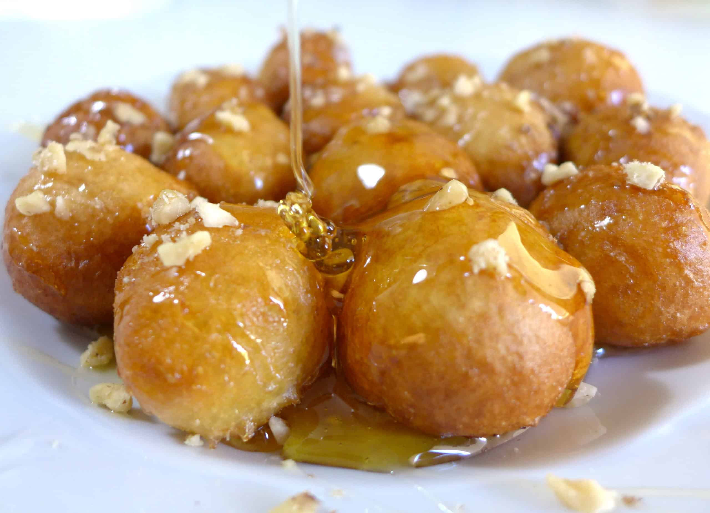

Loukoumades

Description
Loukoumades are simple greek fried donuts covered in a honey syrup and sprinkled with nuts.
Ingredients
- 1 cup water for dough
- 2 tablespoons sugar
- 2 tablespoons yeast
- 3 cups AP flour
- 2 Tbsp. cornstarch
- 1 cup lukewarm milk
- 3 Tbsp. olive oil
- oil for frying
- 1/3rd cup crushed nuts
- cinnamon and powdered sugar for serving
- 1 cup water for syrup
- 1 cup honey
- 1 cup sugar
Steps
- Mix water sugar and yeast together in a bowl. Set aside for 10 minutes
- Add flour, corn starch, milk, and olive oil. Mix and knead for 5 minutes
- Cover the bowl and set aside to rise for 1 hr
- Prepare the honey syrup by compining water, sugar, and honey. Stir while bringing to a boil, then simmer for 20 minutes
- Deflate the dough and divide into small golf ball sized balls.
- Heat frying oil until 325 degrees. Add dough balls to oil and fry for 2 to 3 minutes
- Dunk the finished balls in the syrup while still hot
- Once cooled sprinkle with toppings
- Enjoy!